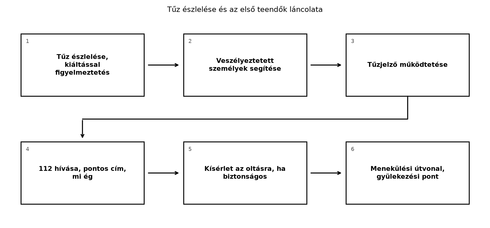

Képzeld el a következő hétköznapi műhelyhelyzetet: hegesztés közben egy fröccsenő szikra meggyújtja az állvány alatt felejtett olajos rongyot. A láng gyorsan terjed, a közeli benzines kannánál füstöl. Ebben a pillanatban nem mindegy, hogy a szerelő tudja-e, mit jelent a tűzoltó készüléken az „A, B, C” jelölés, hogyan kell megfogni a porral oltót, és mikor kell abbahagyni az oltást és elhagyni a műhelyt. Ugyanebben a helyzetben egy tanuló megszédül a füsttől, égési sérülést szenved a kezén, és ha senki nem ismeri a mentési láncot, a segítség késlekedése súlyosbíthatja a sérülést.
A gépjárműjavító műhely tűz- és egészségvédelmi tudása nem elméleti dísz: minden évben előfordulnak üzemanyag- és olajtüzek, akkumulátor-robbanások, illetve vegyszer- és égési sérülések. Az alábbi alfejezet ezeket a műhelyi helyzeteket tanítja meg kezelni: kiválasztani a tűzosztálynak megfelelő tűzoltó eszközt, szabályosan jelezni a tüzet, és elsősegélyt nyújtani a leggyakoribb sérüléseknél. A hangsúly az azonnali, biztonságos döntésen van, nem a tűzoltói szakmunkán: a járműjavító szakember feladata az életveszély elhárítása és a szakszerű segítség gyors értesítése.
Rajzolj magad elé egy tipikus kétszintes járműjavító műhelyt. A földszinten, a központi oszlop mellett, jól látható helyen piros porral oltó készülék függ, felirata: „ABC por 6 kg”. A falon zöld menekülési jel mutat a hátsó kijárat felé, és ott van a gyülekezési pont táblája. A műhelyajtó mellett dobozban találhatók az elsősegélynyújtó felszerelések: steril gézlapok, ragtapasz, tekercskötés, nyomókötés, olló, egyszer használatos gumikesztyű, hideg borogatás. Az emelő mellett egy második tűzoltó készülék áll, ez szén-dioxiddal oltó (CO₂), amelyet elektromos és folyékony tüzekhez helyeztek ki. A gázpalack-tároló rácsos, szellőztetett fülkéjében gázérzékelő és „Dohányozni tilos” tábla van. Ezt a képet most a szabályok felől is értelmezni fogjuk, hogy a munkavállaló mindig gyorsan, célirányosan cselekedjen.
A tűzriadó lefolyását az alábbi folyamatábra foglalja össze:

A műhelyben a tűzjelzés és a menekülés gyors, begyakorolt folyamat, amelyet minden új dolgozónak és tanulónak ismernie kell. A fenti folyamat egyetlen célra irányítja a cselekvést: előbb embert menteni, utána jelezni, és csak akkor oltani, ha azzal nem veszélyeztetjük magunkat.
Definíció. Tűzosztály. Az éghető anyag halmazállapota és kémiai viselkedése szerint a tüzet osztályozzuk, mert az oltóanyag hatásossága ettől függ. A legfontosabb tűzosztályok:
| Osztály | Égő anyag | Példa a járműjavító műhelyben | Alkalmas oltóanyagok (általában) |
|---|---|---|---|
| A | szilárd anyagok, izzással, parázslással égnek | fa raklap, rongy, gumiabroncs, műanyag burkolat | víz, hab, ABC por |
| B | folyékony anyagok vagy olvadékká váló szilárd anyagok | benzin, gázolaj, motorolaj, oldószer, festék | hab, CO₂, BC/ABC por; víz TILOS |
| C | éghető gázok | propán-bután, acetilén, földgáz | por, CO₂; a gázelzárás az elsődleges |
| D | fémek | magnézium, titán, alumíniumpor | speciális fémoltó por; víz TILOS |
| F | étolaj, zsír | járműjavítóban ritkább, konyhai egységben fordul elő | F osztályú nedves kémiai oltó, hab |
Az elektromos tűz hagyományosan nem külön tűzosztály, hanem egy további veszélyforrás: a villamos energia jelenléte miatt az oltóanyag nem lehet vezető, és a feszültségmentesítést meg kell kísérelni. A porral oltó és a szén-dioxiddal oltó készülék jellemzően feszültség alatti elektromos tüzekhez is használható, de csak a készülék címkéjén feltüntetett maximális feszültségig (például 1000 V-ig; ellenőrizendő: a konkrét készülék gyártói adata). A víz és a hab ezzel szemben elektromos tűznél nem választható addig, amíg a rendszer feszültség alatt van.
Definíció. Tűzveszélyességi osztály. Az anyagok, keverékek és helyiségek besorolása tűzveszélyességük szerint (robbanásveszélyes, tűzveszélyes vagy nem tűzveszélyes osztály). Az építmény és a tűzszakasz tűzvédelmi követelményeit a kockázati osztály (nagyon alacsony, alacsony, közepes, magas kockázat) határozza meg. A magyar szabályozás ezt az Országos Tűzvédelmi Szabályzatban (OTSZ) rendezi (ellenőrizendő: 54/2014. (XII. 5.) BM rendelet hatályos szövege és fogalomrendszere); a régi A–E tűzveszélyességi osztályok régi dokumentumokban még előfordulnak, de nem érvényesek. A gyakorlatban a járműjavító műhely, ahol gyúlékony folyadékok, gázpalack, olajos hulladék, hegesztőmunka és akkumulátortöltés is előfordul, magas tűzkockázatú helyiségnek számít; a pontos besorolást a tűzriadó tervben és a munkáltatói tűzvédelmi szabályzatban kell rögzíteni.
A tűzoltó készülékek fő fajtái:
Az alábbi ábra felső része a felsorolt öt készüléket és alkalmasságukat mutatja tűzosztályonként (✔ alkalmas, ✘ nem alkalmas, (✔) korlátozottan), az alsó képsor a készülék kezelését: biztosítószeg kihúzása, célzás a tűz tövére, a kar lenyomása, seprő mozdulat.
Tilos. Égő benzint, gázolajat, motorolajat vagy oldószert vízsugárral (vízzel oltó készülékkel, tömlővel) oltani, mert a víz a forró, könnyebb folyadék alá kerül, gőzrobbanást okozhat, és szétfröcsköli az égő folyadékot. A folyadéktüzet habbal (a hab a felszínen záróréteget képez), porral vagy szén-dioxiddal oltjuk; kis edényben letakarással (fojtással).
A műhelyben a tűzvédelem elsősorban megelőzés. Gyakorlati szabályok:
Előírás. A tűzjelzés rendjét a munkáltatói tűzriadó terv és az Országos Tűzvédelmi Szabályzat (OTSZ) határozza meg (ellenőrizendő: hatályos OTSZ ide vonatkozó pontjai). A tipikus folyamat: észlelés – figyelmeztetés – veszélyeztetett személy segítése – tűzjelző működtetése – a 112 segélyhívó hívása – kísérlet az oltásra, ha az biztonságos – menekülési útvonal használata.
A 112-es egységes segélyhívón a bejelentő mondja el: ki hívja, pontosan hol van a tűz (település, utca, házszám, szint), mi ég, van-e sérült, van-e robbanásveszély, és várjon a hívás fogadójának visszakérdezésére. Telefonos segítségkéréskor soha ne szakítsuk meg a hívást, amíg a diszpécser nem mondja, hogy letehetjük.
A menekülés szabályai: a menekülési útvonalat mindig szabadon kell hagyni; füst esetén a padló közelében haladjunk, mert ott kevesebb a mérgező füst; zárt ajtót a kilincs megérintésével ellenőrizzünk, ha forró, ne nyissuk ki; a gyülekezési ponton jelentkezzünk, hogy a létszámellenőrzéskor ne keressenek – ezzel magunkat és másokat is védünk.
Szabály. A tűzoltó készülék használatának alaptechnikája a „kihúz, céloz, nyom, söpör” módszer:
Ha a tűz nagyobb, mint egy kis tartály, a helyiség füsttel telik meg, vagy gázpalack, üzemanyagtartály, hibrid-akkumulátor érintett, azonnal hagyjuk el a helyiséget, és hívjunk tűzoltót.
Definíció. Mentési lánc. Az elsősegélynyújtás egymásra épülő, időben sürgős lépései: 1. a helyszín és a saját biztonság ellenőrzése; 2. a sérült állapotának felmérése (eszmélet, légzés); 3. a 112 hívása; 4. elsősegély a mentő kiérkezéséig.
A műhelyben jellemző sérülések: vágás, szúrt seb, égés, vegyszer-szembefröccsenés, sav/lúg marása, áramütés, összenyomott végtag (emelőről leeső jármű, prés). A teendőkben a leggyakoribb hibát az okozza, hogy a segítő pánikba esik, és elfelejti felmérni a saját veszélyeztetettségét. Először mindig a veszélyforrást szüntessük meg, vagy távolítsuk el a sérültet abból a környezetből.
Eszméletlen sérült és újraélesztés alapjai (BLS). Ha a sérült nem reagál a megszólításra és a vállrázásra:
A képsor a fenti lépések testhelyzeteit mutatja: reakcióvizsgálat, légútfelszabadítás, légzésvizsgálat, stabil oldalfekvés és a mellkaskompresszió kézhelyzete.
Vérzéscsillapítás. A vágott, szúrt sebet közvetlen nyomással fogjuk le. Steril gézlapot helyezünk a sebre, erősen rányomunk, és a végtagot felpolcoltatjuk. Ha átvérzik, az újabb réteget ráhelyezzük, nem távolítjuk el az elsőt. A szorítókötést csak életveszélyes, erős végtagvérzésnél használjuk, széles, rugalmas anyagból, és feljegyezzük a felhelyezés idejét. Levágott testrészt tiszta zacskóba teszünk, és hűtőtáskában, jéggel körülvéve szállítjuk, de ne fagyasszuk.
Égési sérülés. A hő okozta sérülést azonnal hűteni kell folyó, lehetőleg langyos/hideg csapvízzel, legalább 10–20 percen át, vagy amíg a fájdalom csillapodik. A ráégett ruhát ne szakítsuk le; a nem tapadt ruhát óvatosan eltávolíthatjuk. A sebet steril, száraz kötszerrel fedjük; ne tegyünk rá zsírt, kenőcsöt, joghurtot, fogkrémet vagy jeget. Nagyobb méretű, az arcra, a kézre, az ízületekre kiterjedő, vagy gyermeket, idős embert ért égésnél mindig hívjunk mentőt.
Vegyi sérülés. Ha sav, lúg, fékfolyadék, hűtőfolyadék vagy üzemanyag kerül a bőrre, a szennyezett ruhát azonnal le kell venni, és a bőrt bő, folyó vízzel hosszan öblíteni. Tilos a savat lúggal vagy lúgot savval semlegesíteni, mert heves hőtermelő reakció alakulhat ki. Ha a vegyszer a szembe jut, a szemhéjat ujjainkkal nyitva tartva legalább 10–15 percig bő vízzel öblítsünk, távolítsuk el a kontaktlencsét, és haladéktalanul orvoshoz kell fordulni.
Áramütés járművön. A hagyományos 12 V-os fedélzeti hálózat alacsony feszültségű, így közvetlen áramütést ritkán okoz, de a nagy indítóáram alatt bekövetkező rövidzárlat fémtárgyakat izzíthat, ékszereket forraszthat össze, égési sérülést okozhat. A sérültet megérinteni csak az áramkör megszakítása után szabad; 12 V-on is kapcsoljuk ki a gyújtást, kössük le az akkumulátor negatív kapcsát, ha lehetséges, mielőtt a sérülthöz nyúlunk.
A hibrid és elektromos járművek nagyfeszültségű (HV) rendszerén az áramütés életveszélyes. A sérültet megérinteni tilos, amíg a HV-rendszer feszültségmentességét arra kiképzett, jogosult személy nem ellenőrizte és nem igazolta. Ilyen esetben azonnal hívjunk tűzoltót/mentőt, maradjunk távol a narancssárga vezetékektől, és a gyártói mentési adatlap szerint járjanak el a beavatkozók. A kimentéshez a szigetelő eszközök és a gyártói eljárás ismerete szükséges; ezt a VIII. részben, a HV-veszélyek, jogosultság és munkaszervezés alfejezetben tárgyaljuk részletesen.
Továbbvitt eredmény. A tűzosztályok, a tűzoltó készülékek helyes megválasztása, a 112 hívás és a mentési lánc lépései a nagyfeszültségű járműrendszerek biztonsági fejezetében is visszatérnek: a HV-akkumulátor tűzénél és az áramütött sérült ellátásánál ugyanezt a logikát kell magasabb kockázat mellett alkalmazni. A tűz és elsősegély ismerete tehát nemcsak a hagyományos műhelyi esetekre, hanem a modern hibrid/elektromos járművek mentési és munkahelyi biztonsági feladataira is előfeltétel.
A tűzvédelmi felszerelést és az elsősegélynyújtó eszközöket rendszeresen ellenőrizni kell, mert csak működőképes állapotban nyújtanak védelmet. Ellenőrzőlista:
A tűzoltó készülékek időszakos karbantartását szakember végzi; a járműszerelő nem javítja, csak ellenőrzi és használja az eszközt.
Egy márkaszervizben a technikus az alsó védőburkolat leszerelése után észreveszi, hogy a kipufogócsonkra hosszabb idő alatt rászivárgott motorolaj, és a motor melegedése után vékony füst jelenik meg. A technikus szól a kollégájának, hogy hozza a CO₂ oltót; ekkor a kipufogócsonkra csöpögő olaj lángra kap, és a kolléga alkarjára forró olaj fröccsen. A technikus kiabálva figyelmeztet, egy másik kolléga megnyomja a kézi tűzjelzőt, és hívja a 112-t. A technikus a legközelebbi ABC porral oltó készüléket használja: kihúzza a biztosítószeget, megnyomja a kart, és a fúvókát a tűz alapjára irányítva néhány másodperc alatt eloltja a kisebb olajtüzet. Utána a helyiséget kiszellőzteti, a sérült alkarját folyó, hideg vízzel hűti, steril kötszerrel fedi, majd orvoshoz küldi. A hibafeltárás után a tömítést cseréli, a szivárgás okát megszünteti, a kipufogócsonkról az olajmaradékot az első indítás előtt lemossa, és az olajos rongyokat a veszélyes hulladékba helyezi.
Tanulság: a készüléket a tűzosztály (B, folyadéktűz) alapján választottuk; a 112 hívás és a tűzjelző működtetése akkor is szükséges, ha az oltás sikeres, mert a füst, a parázs és a rejtett góc miatt utóvizsgálat kell. Forró kipufogó közelében az olajszivárgást az első indítás előtt meg kell szüntetni és a maradékot le kell tisztítani.
Biztonsági korlát. Az alábbi eljárás tanműhelyi környezetre, oktató felügyeletére és a munkahelyi tűzriadó terv betartására vonatkozik; a megadott értékek tanulási példák.
Eljárás: tűz észlelése és az első teendők
Eljárás: égési sérült ellátása (recipe mini)
1. feladat (A) Sorold fel a tűzosztályokat, és írj mindegyikhez egy-egy példát a járműjavító műhelyből!
2. feladat (A) Miért nem választható víz vagy vízalapú hab az elektromos berendezés tüzének oltására? Melyik két oltóanyag alkalmas feszültség alatti elektromos tüzekre általában?
3. feladat (B) A műhelyben egy akkumulátortöltő közelében hidrogéngáz csapódik fel, és az érkező szikrától meggyullad. Milyen tűzosztályba tartozik, és mi az elsődleges oltási eljárás?
4. feladat (B) Írd le az alapszintű újraélesztés (BLS) lépéseit felnőttnél, ha a sérült nem lélegzik! Mi az ajánlott kompresszió mélysége és üteme?
5. feladat (C) Egy tanuló égési sérülést szenved a karjára fröccsenő hűtőfolyadéktól. Kollégája jégakkukkal próbálja hűteni, majd égési kenőcsöt ken rá. Mi a hiba ebben az ellátásban, és mi a helyes sorrend?
6. feladat (D) A szerelő a 12 V-os akkumulátor pozitív saruját szereli, a kulcs véletlenül hozzáér a kocsiszekrényhez, rövidzár keletkezik, a gyűrű izzani kezd, és a dolgozó égési sérülést szenved. Milyen elsősegély-lépéseket tegyél meg, és mi a megelőzés?
1. feladat (A)
A – fa raklap, gumiabroncs, karton; B
– benzin, gázolaj, motorolaj, oldószer; C –
propán-bután, acetilén; D – magnéziumötvözet alkatrész,
alumíniumpor; F – étolaj, zsír (ha van konyhai
részleg). Az elektromos tűz nem külön osztály.
2. feladat (A)
A víz vezeti az áramot, így feszültség alatti elektromos tűznél
áramütést okozhat, és a víz gőzrobbanást is előidézhet. Általában a CO₂
és a porral oltó készülékek alkalmasak, de csak a készüléken
feltüntetett maximális feszültségig (ellenőrizendő: a
gyártó adata).
3. feladat (B)
A hidrogéngáz égése C osztályú gáztűz. Elsődleges a gázforrás elzárása
(töltő áramtalanítása, a gázfejlődés megszüntetése), majd porral vagy
CO₂-vel oltás. Elsődleges a gázfejlődés megszüntetése (a töltő hálózati
oldali kikapcsolása, csak ha ez biztonságosan, a töltőtől távol
megtehető). Ha a gázforrás nem szüntethető meg, a lángot nem
oltjuk el, mert a tovább áramló gáz robbanóelegyet képezhet, és
visszagyulladáskor robbanás következik be; a környező éghető anyagokat
eltávolítjuk vagy védjük, a helyiséget elhagyjuk, és tűzoltót hívunk.
Figyelem. A hidrogén lángja nappal alig látható; az
akkumulátor robbanásakor sav fröccsenhet – arcvédő és saválló kesztyű
kell.
4. feladat (B)
Lépések: 1. segítségkérés, 112 hívás; 2. légút felszabadítása (homlok
hátra, áll kiemel); 3. légzésvizsgálat max. 10 mp; 4. 30 kompresszió, 2
befúvás ciklus; kompressziós mélység 5–6 cm, ütem 100–120/perc; AED
használata, ha elérhető. A laikus is csak kompressziót végezhet, ha a
befúvást nem vállalja.
5. feladat (C)
Hiba: a jég közvetlenül a bőrre nem tehető, mert további
szövetkárosodást okoz; az „égési kenőcs” otthoni, nem steril készítmény
fertőzést okozhat. Helyes sorrend: 1. a forró folyadék lemosása, a
szennyezett ruha eltávolítása, ha nem tapadt; 2. bő, folyó csapvízzel
hosszan hűtés 10–20 percen át; 3. steril, száraz kötszerrel fedés; 4.
orvosi ellátás, 112 hívás, ha a sérülés kiterjedt.
6. feladat (D)
Elsősegély: 1. áramtalanítás (gyújtás ki, negatív akkumulátorkapocs
lekötése, ha lehetséges); 2. a sérültet csak az áramkör megszakítása
után érinteni; 3. égési sérülést folyó vízzel hűteni; 4. steril fedés;
5. orvos/112 hívás. Megelőzés: a negatív kapcsot először le kell kötni,
és utoljára vissza; a szerelésnél szigetelt szerszám, a gyűrűk, óra
levétele; az akkumulátorsarukat a gyártói nyomatékkal (ellenőrizendő:
gyártói adat) húzd meg, szigetelt szerszámmal.
A járműjavító műhelyi tűzvédelem és elsősegély alapja a tűzosztályok ismerete: A (szilárd), B (folyadék), C (gáz), D (fém), F (zsír/étolaj); az elektromos tűz nem külön osztály, de feszültség alatt csak CO₂ vagy porral oltó használható. A tűzoltó készülék kiválasztása az égő anyag osztályától függ; víz égő benzinre/olajra tilos. A tűzjelzés a 112 segélyhívóval, a tűzjelző működtetésével, a veszélyeztetettek mentésével és a biztonságos oltási kísérlettel történik; ha a tűz nő, a menekülési útvonalon, füstben alacsonyan kell haladni. Az elsősegélynyújtás a mentési láncot követi: saját biztonság, állapotfelmérés, 112 hívás, elsősegély. Alapszintű újraélesztésnél felnőtteknél 30 kompresszió 5–6 cm mélyen, 100–120/perc ütemben, majd 2 befúvás. Vérzést közvetlen nyomással, égést folyó vízzel, vegyi sérülést bő öblítéssel kezelünk. A HV-rendszeren az áramütött sérültet megérinteni tilos; azonnali áramtalanítás, 112 hívás, és szakképzett beavatkozó szükséges. A tűzvédelmi és elsősegély-elvek a VIII. részben, a HV-veszélyek, jogosultság és munkaszervezés fejezetben térnek vissza, ahol a HV-akkumulátor tűzét és az áramütött sérültet ezen alapokra építve tárgyaljuk.